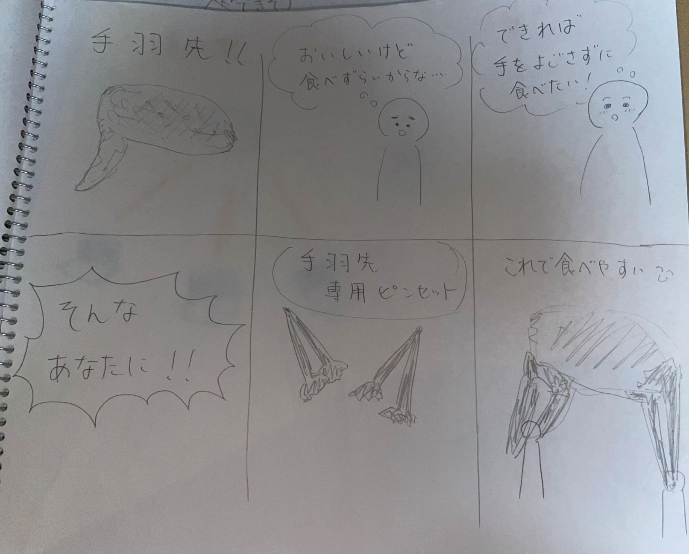
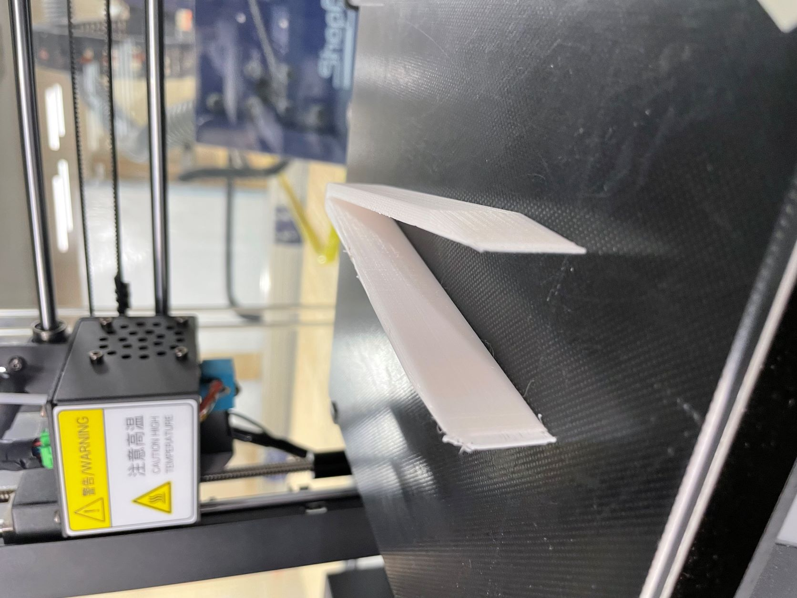
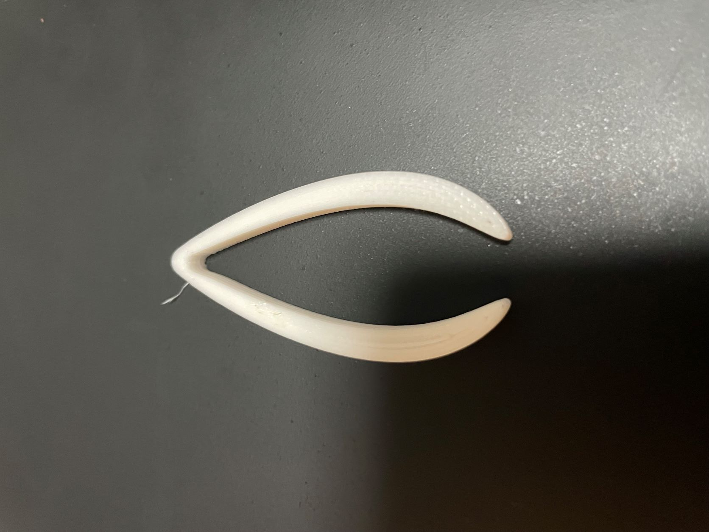
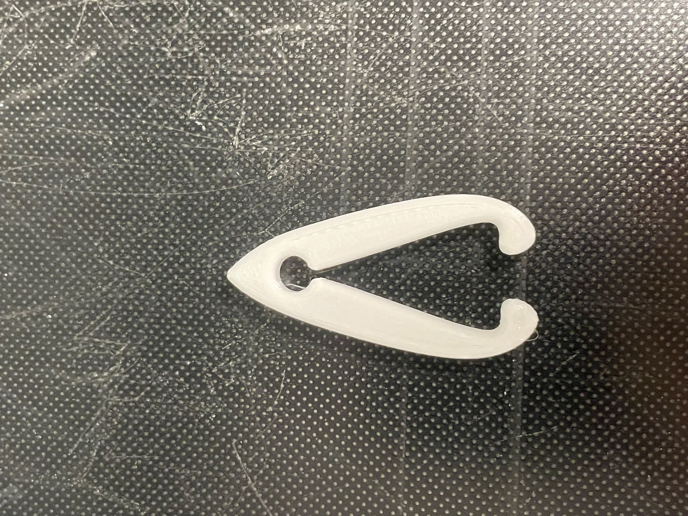
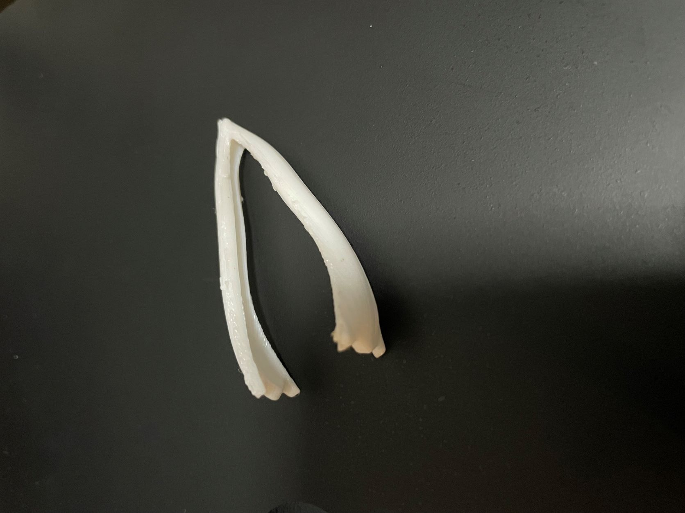
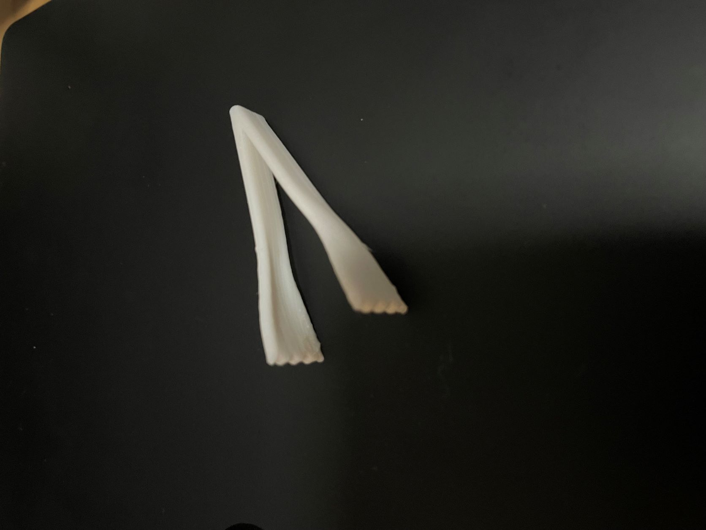
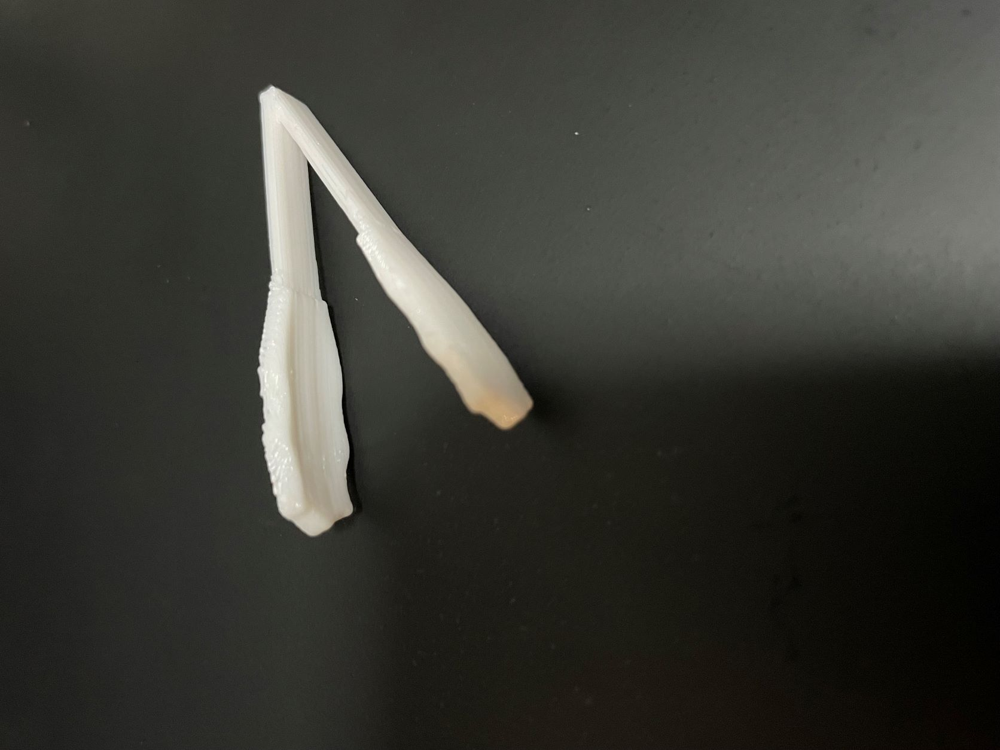
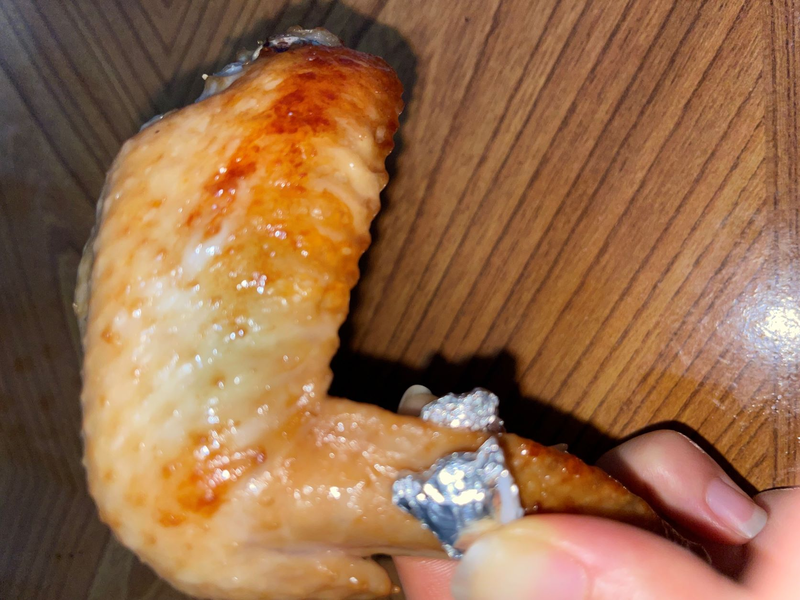
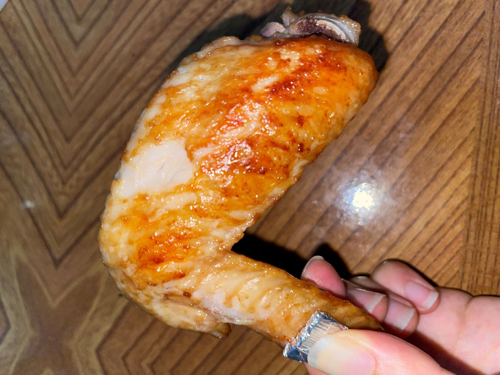
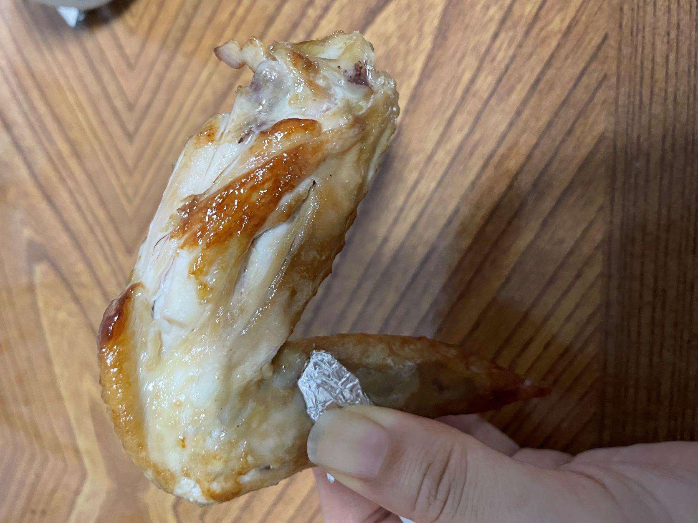

Assignment1
1.作品タイトル「手羽先を食べるためのピンセット」
2.構想段階のスケッチ


3.実際に作った作品
【試作１】 fusion360の操作に慣れるためにとりあえず作ってみた。長さが15cm近くあり、基準値よりかなり大きくなってしまった。

【試作２】 程よい大きさで基本的なピンセットの形のものを作ってみた。

【試作３】 先端に丸みをつけて手羽先が掴みやすいように意識した。根元が固く、挟み込みずらかった。

【作品１】 フォームを使い、丸みをつけて手羽先へのフィット感を良くした。

【作品２】 作品１よりも丸みを抑え、手へのフィット感も意識した。

【作品３】 トングを小さくしたような見た目で手羽先の掴みやすさを重視した。

5.作品の説明
手が汚れてしまうことを気にせずに手羽先を食べられるピンセットです。ピンセットを両手にひとつずつ持って食べると食べやすいです♪
6.なぜこの作品を作ろうという想いに至ったか
手羽先は美味しいけれど、普段食べ慣れていない私は少し食べずらさを感じていました。手を汚したくない場面でも手羽先が食べられたらいいなと思い、この作品を作りました。
7.実際にピンセットで手羽先を食べてみた
今回のピンセットの素材は、「温度的には大丈夫だと思われるが、食用には対応していない」とのことだったので、手羽先が触れる部分にアルミホイルを巻いて使用しました。
※写真をとるため片手で持っていますが実際は両手にピンセットを持って頂きました♪
【作品１】３つの作品のなかで最もカーブが強いため、骨へのフィット感は一番良かった。

【作品２】柄の部分が一番太く、持ちやすさがあった。

【作品３】ピンポイントでしっかりと掴めて、意外にも一番安定感があった。
